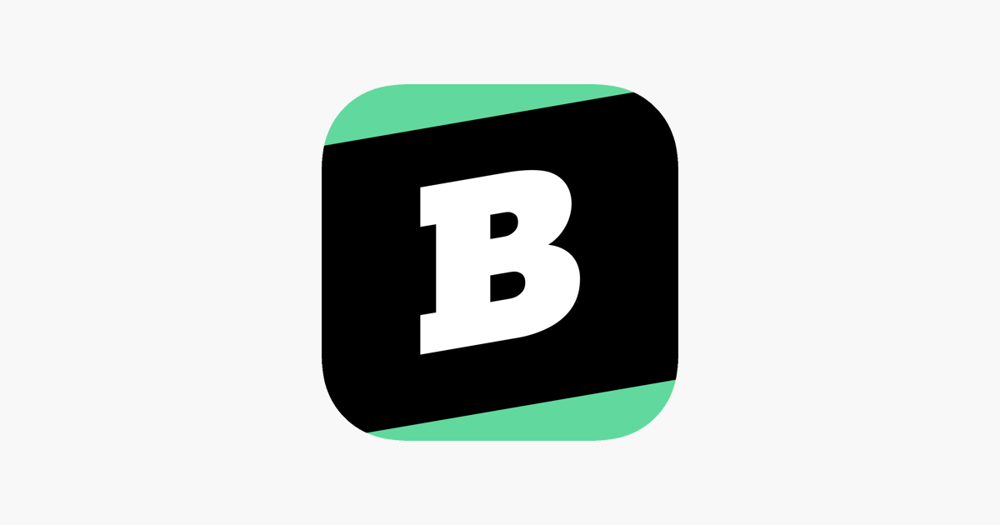
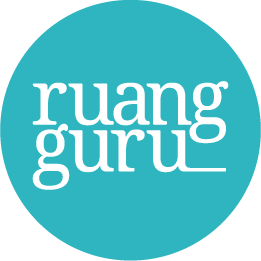
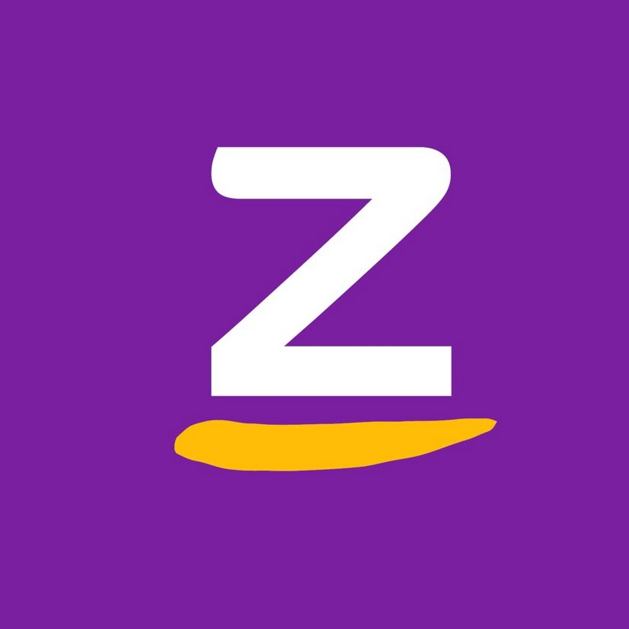

Kamu yang selalu ingin mempelajari hal-hal baru di luar pendidikan formal, mungkin pernah mendengar nama website yang satu ini.
Khan Academy merupakan organisasi non-profit yang dibentuk oleh Salman Khan pada tahun 2008.
Kamu yang selalu ingin mempelajari hal-hal baru di luar pendidikan formal, mungkin pernah mendengar nama website yang satu ini.
Khan Academy merupakan organisasi non-profit yang dibentuk oleh Salman Khan pada tahun 2008.Seiring berjalannya waktu, setiap orang harus berakhir pada suatu tingkat pendidikan tertentu. Entah karena memang sudah waktunya lulus dari sebuah instansi, atau karena kendala biaya. Tapi, alasan ini tidak bisa digunakan ketika kita sudah hidup di tengah pesatnya perkembangan teknologi. Ada berbagai macam situs yang bisa kamu gunakan untuk belajar online.
Jika memang berniat untuk meningkatkan kemampuan akademis maupun kemampuan diri sesuai dengan minat yang kamu miliki, keterbatasan waktu dan medium sudah bukan menjadi halangan lagi. Kita hidup di zaman serba instan dan hampir segala sesuatunya sudah semakin mudah, termasuk untuk belajar.
Kamu bisa menggunakan beberapa situs di bawah ini untuk menuntut ilmu yang nantinya bisa kamu gunakan untuk mengembangkan dan mengasah kemampuan diri di lingkungan yang semakin ketat akan persaingan.
| Pendiri | Nama Situs/web | Tahun di buat | Kantor Pusat | Bahasa |
|---|---|---|---|---|
| Sal Khan | khan Academy | 2008 | Mountain View, California, Amerika | bahasa Inggris Amerika |
| Michał Borkowski | Brainly | 2009 | New York City, United States, Kraków, Poland | Hindi, English, Spanish, Portuguese (BR), French, Filipino (Tagalog), Turkish, Romanian, Russian, Polish, Italian, Indonesian |
| Belva Devara, Iman Usman | Ruang Guru | 2014 | jakarta,Indonesia | Indonesia |
| Sabda PS, Medy Suharta | Zenius | 2004 | Setiabudi, Jakarta Selatan, Jakarta, Indonesia | English, Indonesia |
| Eren Bali, Gagan Biyani, Oktay Çağlar[ | Udemy | 2010 | San Francisco, California, Amerika | English,French,Spanish,Turkish,Portuguese,German, Japanese,Polish,Korean,Russian,Italian,Chinese |
Berikut kelebihan dari bebrapa situs di bawah :
Kamu yang selalu ingin mempelajari hal-hal baru di luar pendidikan formal, mungkin pernah mendengar nama website yang satu ini.
Khan Academy merupakan organisasi non-profit yang dibentuk oleh Salman Khan pada tahun 2008.
Ada begitu banyak ragam jenis ilmu yang bisa kamu pelajari di Khan Academy, mulai dari pelajaran Matematika yang bisa dipilih sesuai topik atau kelas, ilmu komputer, sains hingga pengembangan pola pikir dan sejarah seni dari seluruh dunia yang dibagi menjadi beberapa periode waktu tertentu.
“Dari bertanya jadi mengerti” merupakan slogan situs yang berdiri sejak 2009 di Polandia ini. Brainly mengoperasikan sekelompok jaringan pembelajaran yang bisa digunakan oleh siswa, guru, bahkan orang tua.
Mempunyai sistem seperti Yahoo! Answers, Brainly telah membantu jutaan siswa di seluruh dunia mendapatkan jawaban untuk tugas-tugas mereka. kamu juga bisa menggunakan Brainly untuk mengeksplor kemampuan mengajarmu melalui tulisan.
Nah, kamu pasti pernah mendengar perusahaan startup yang bergerak di bidang pendidikan ini. Website dengan aplikasi bernama sama ini dibuat oleh anak muda asal Indonesia pada tahun 2014, Adamas Belva Syah Devara dan M. Iman Usman.
Ruangguru yang lebih berfokus pada aplikasi ini menawarkan kursus atau bimbingan belajar online (bimbel online) dengan biaya yang sangat terjangkau dibanding bimbel biasa atau les privat.
Zenius adalah situs belajar online yang sudah berdiri sejak tahun 2007. Situs ini menyediakan berbagai macam materi pendidikan untuk siswa SD hingga SMA. Materinya pun mudah untuk diakses, karena tersedia bentuk video dan e-book di dalamnya. Jika tertarik ingin menggunakan situs ini, kamu bisa mengunduh aplikasi Zenius di ponsel atau langsung mengunjungi laman resminya di www.zenius.net.
 Berbeda dengan Khan Academy yang lebih memfokuskan materi pada pendidikan akademis dan teknis,
Udemy muncul sebagai situs belajar online dengan ilmu-ilmu praktis yang bisa diterapkan di kehidupanmu sehari-hari.
Mulai dari peningkatan kepercayaan diri, kepemimpinan, teknik marketing hingga cara merawat dan mengajar hewan peliharaan.
Berbeda dengan Khan Academy yang lebih memfokuskan materi pada pendidikan akademis dan teknis,
Udemy muncul sebagai situs belajar online dengan ilmu-ilmu praktis yang bisa diterapkan di kehidupanmu sehari-hari.
Mulai dari peningkatan kepercayaan diri, kepemimpinan, teknik marketing hingga cara merawat dan mengajar hewan peliharaan.
Namun, tak menutup kemungkinan bagimu untuk mempelajari topik-topik akademis, seperti Sains, Matematika, Bahasa, atau Teknologi.
Bagaimana, setelah kamu mengetahui beberapa jenis situs untuk belajar online dengan mudah tanpa harus memakan biaya besar, adakah yang sesuai dengan ketertarikanmu? Bagi kamu yang masih harus menghadapi pelajaran formal, teruslah semangat dan sebisa mungkin carilah ilmu di luar pendidikan formalmu. Tapi, jika pendidikan formalmu sudah usai atau mau tidak mau harus berhenti, jangan patah semangat dan carilah ilmu dari berbagai sumber.